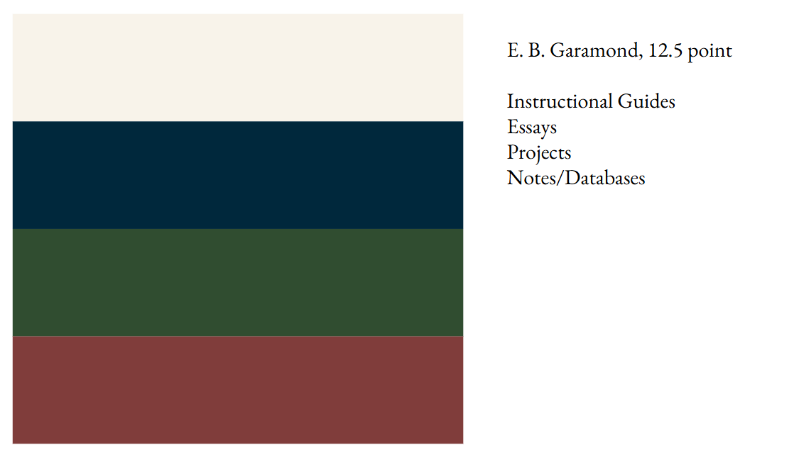

About the Site
Discussion of the design philosophy of JimKemp.github.io
I first made jimkemp.github.io when I was in the eighth grade, because someone mentioned offhandedly to me that I'd need it to apply to things.
My first project was complying with Google's acessiility standards for alt text, font size, and contrast, plus using a simple js library.
The site as it currently stands is the second major iteration.
Eventually there will be a third, which will be distinguished from this site by better operations under the hood, but currently I'm operating this transitional site.
The objectives of this site, beyond displaying information, is to create a sort of warm and positive experience for the user.
I'd like it to have a traditional, analog feel.
For example, the primary font is EB Garamond, both because I think it's beautiful but also because there's a reading speed/accuracy study showing adults - particularly older adults - find it the most ledgible.
Titles are done in Cardo, which is a similar, slightly more arts-and-crafts style font that I think works well for large text.
I'm not a fan of site animations, I'd like this site to feel like reading a book. Additionally, the code of the site is so simple it's fast in any browser.
The site's one JS use is to implement a day-night cycle, hopefully protecting the reader's circadian rhythms.
The site switched to dark or light mode depending on your device clock, and the image on the homepage changes from a sunrise to a night scene.
This site makes use of Tufte-style sidenotes to display additional notes alongside the primary text. (Tufte, The Visual Display of Quantitative Information). On mobile, the sidenotes become inline

Color and Font profiles used on JimKemp.github.io
Return Home